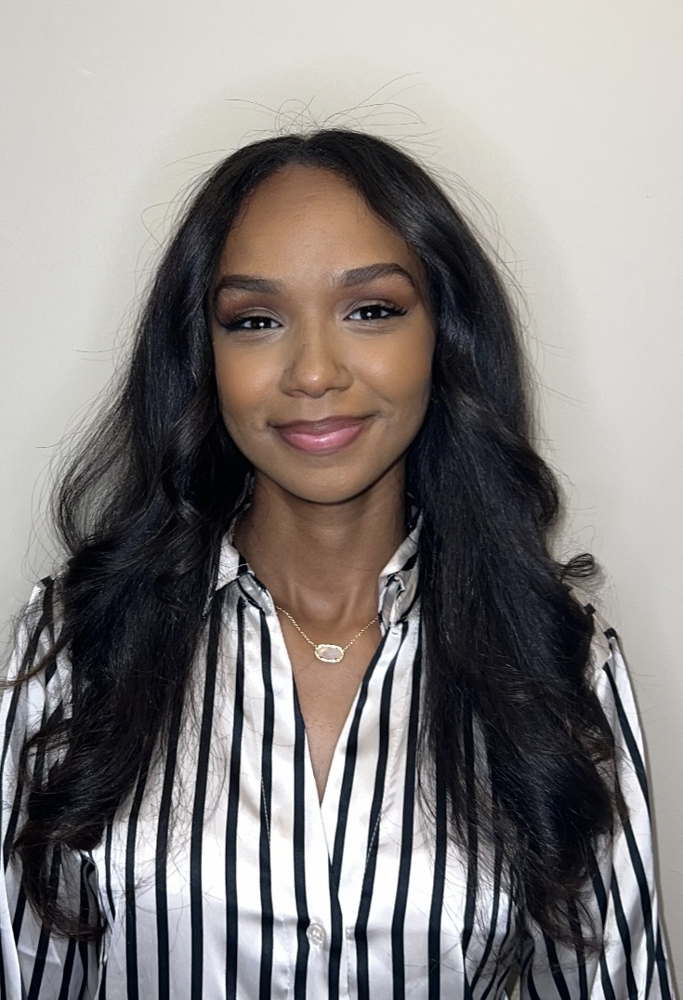

About Me
Hi, I'm Hannah, a student currently studying at JCCC and NWMSU. I'm really drawn to digital marketing and how it blends with basic graphic design; I love creating eye-catching visuals for online platforms. My passion for fashion also plays a big part, as I find it fascinating how marketing and design work together to tell a brand's story in that world. Looking at how all these different areas connect helps me think creatively about marketing problems.
Throughout my studies, I've explored various aspects of digital communication, including mastering analytics tools and understanding consumer behavior online. I believe that e-marketing is about more than just technology; it's about connecting with people authentically.
Experience
-
CCC Marketing Intern
N/A, June 2nd – Present
Marketing and Content Creation Intern.
-
Optometrist Tech
N/A, October 2023 – May 2025
Description of responsibilities and achievements in this role.